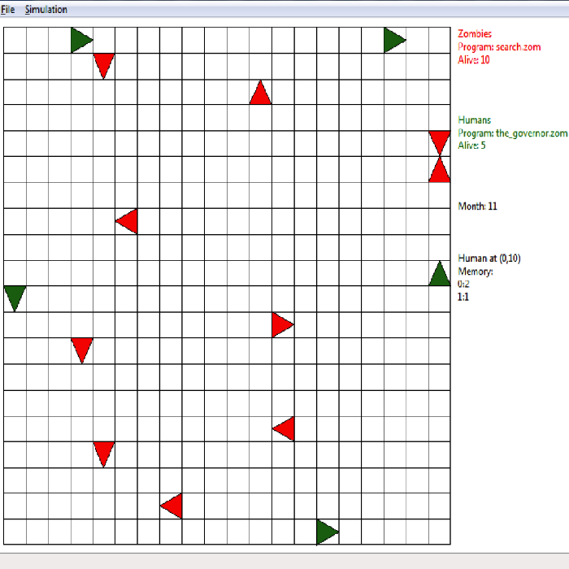
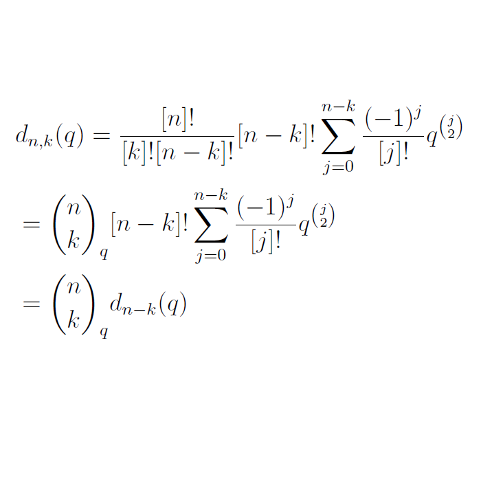

Yida Yin
A graduate of UW-Madison in Statistics. Very strong mathematical and statistics background and a programming enthusiast. Interested in data visualization, statistical computing and machine learning. I'm also a bit of an amateur at creating websites. Currently looking for a new opportunity.
by @Yida Yin
PORTFOLIO 2014-2016

Zombie Apocalypse Simulator
The basic idea is that there are zombies and humans fighting for dominance a post-apocalyptic zombie world. Rather than hard-coding the behavior of the zombies and humans, their behavior is off-loaded to “.zom” files.

Data for Diplomas
The 2015 ‘Data for Diplomas’ run by AT&T provides a rich dataset with detailed information of high school graduation rates between races. The goal of this competation is trying to help increase U.S. high school graduation rates to 90% by the year 2020

A q-analogue of Certain Combinatorial Identities
I gave an extension to the q-analogue of the derangements on 𝑆𝑛 and 𝐵𝑛 with 𝑘 fixed points in this paper.